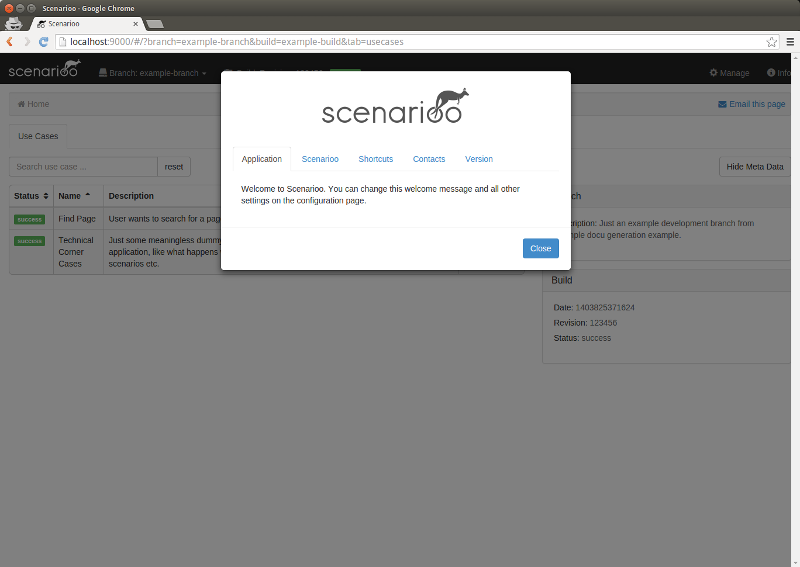
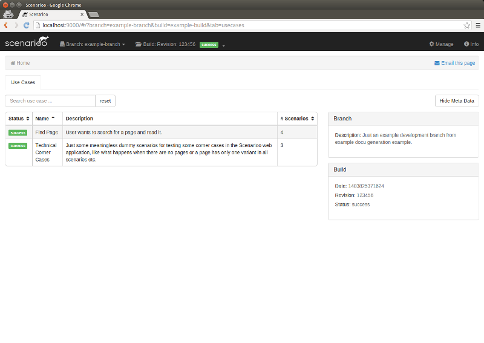

<section id="screenshots" class="clearfix" style="padding:1em;">
	<script>
		jssor_slider1_starter = function (containerId) {

			var options = {
				$AutoPlay: false,                                   //[Optional] Whether to auto play, to enable slideshow, this option must be set to true, default value is false
				$SlideDuration: 800,                                //[Optional] Specifies default duration (swipe) for slide in milliseconds, default value is 500

				$BulletNavigatorOptions: {                                //[Optional] Options to specify and enable navigator or not
					$Class: $JssorBulletNavigator$,                       //[Required] Class to create navigator instance
					$ChanceToShow: 2,                               //[Required] 0 Never, 1 Mouse Over, 2 Always
					$AutoCenter: 1,                                 //[Optional] Auto center navigator in parent container, 0 None, 1 Horizontal, 2 Vertical, 3 Both, default value is 0
					$Steps: 1,                                      //[Optional] Steps to go for each navigation request, default value is 1
					$Lanes: 1,                                      //[Optional] Specify lanes to arrange items, default value is 1
					$SpacingX: 10,                                  //[Optional] Horizontal space between each item in pixel, default value is 0
					$SpacingY: 10,                                  //[Optional] Vertical space between each item in pixel, default value is 0
					$Orientation: 1                                 //[Optional] The orientation of the navigator, 1 horizontal, 2 vertical, default value is 1
				},
				$ArrowNavigatorOptions: {
					$Class: $JssorArrowNavigator$,
					$ChanceToShow: 2
				}
			};

			var jssor_slider1 = new $JssorSlider$(containerId, options);
		}
	</script>

	<!-- Jssor Slider Begin -->
	<!-- You can move inline styles to css file or css block. -->
	<div id="screenshots_slider" style="position: relative; margin: 0px auto;  width: 600px;
        height: 300px; overflow: hidden;">

		<!-- Slides Container -->
		<div u="slides" style="cursor: move; position: absolute; left: 0px; top: 0px; width: 600px; height: 300px;
            overflow: hidden;">
			<div></div>
			<div></div>
		</div>
		<!-- Arrow Navigator Skin Begin -->
		<style>
			/* jssor slider arrow navigator skin 14 css */
			/*
			.jssora14l              (normal)
			.jssora14r              (normal)
			.jssora14l:hover        (normal mouseover)
			.jssora14r:hover        (normal mouseover)
			.jssora14ldn            (mousedown)
			.jssora14rdn            (mousedown)
			*/
			.jssora14l, .jssora14r, .jssora14ldn, .jssora14rdn
			{
				position: absolute;
				cursor: pointer;
				display: block;
				background: url(img/jssor-skins/a14.png) no-repeat;
				overflow:hidden;
			}
			.jssora14l { background-position: -15px -35px; }
			.jssora14r { background-position: -75px -35px; }
			.jssora14l:hover { background-position: -135px -35px; }
			.jssora14r:hover { background-position: -195px -35px; }
			.jssora14ldn { background-position: -255px -35px; }
			.jssora14rdn { background-position: -315px -35px; }
		</style>
		<!-- Arrow Left -->
        <span u="arrowleft" class="jssora14l" style="width: 30px; height: 50px; top: 123px; left: 0px;">
        </span>
		<!-- Arrow Right -->
        	<span u="arrowright" class="jssora14r" style="width: 30px; height: 50px; top: 123px; right: 0px">
        </span>
		<!-- Arrow Navigator Skin End -->

		<!-- Bullet Navigator Skin Begin -->
		<style>
			/* jssor slider bullet navigator skin 14 css */
			/*
			.jssorb14 div           (normal)
			.jssorb14 div:hover     (normal mouseover)
			.jssorb14 .av           (active)
			.jssorb14 .av:hover     (active mouseover)
			.jssorb14 .dn           (mousedown)
			*/
			.jssorb14 div, .jssorb14 div:hover, .jssorb14 .av
			{
				background: url(img/jssor-skins/b14.png) no-repeat;
				overflow:hidden;
				cursor: pointer;
			}
			.jssorb14 div { background-position: -9px -9px; }
			.jssorb14 div:hover, .jssorb14 .av:hover { background-position: -39px -9px; }
			.jssorb14 .av { background-position: -69px -9px; }
			.jssorb14 .dn, .jssorb14 .dn:hover { background-position: -99px -9px; }
		</style>
		<!-- bullet navigator container -->
		<div u="navigator" class="jssorb14" style="position: absolute; bottom: 16px; right: 6px;">
			<!-- bullet navigator item prototype -->
			<div u="prototype" style="POSITION: absolute; WIDTH: 12px; HEIGHT: 12px;"></div>
		</div>
		<!-- Bullet Navigator Skin End -->

		<a style="display: none" href="http://www.jssor.com">javascript</a>
		<!-- Trigger -->
		<script>
			jssor_slider1_starter('screenshots_slider');
		</script>
	</div>
	<!-- Jssor Slider End -->

</section>
